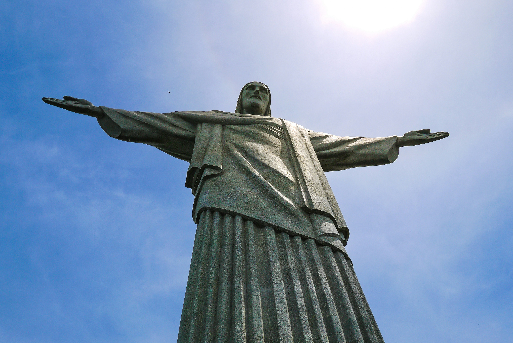
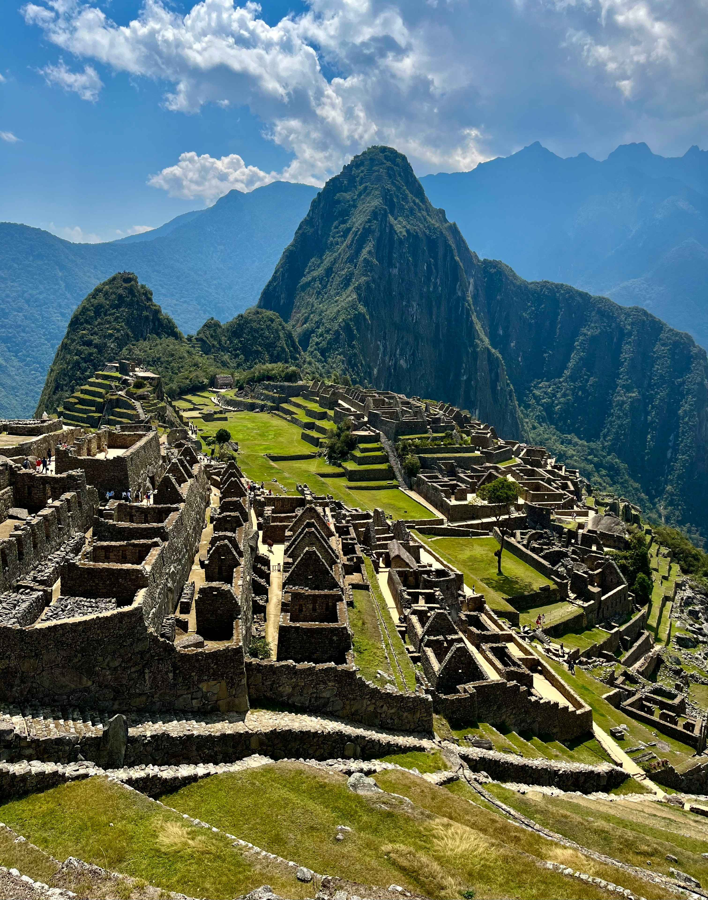
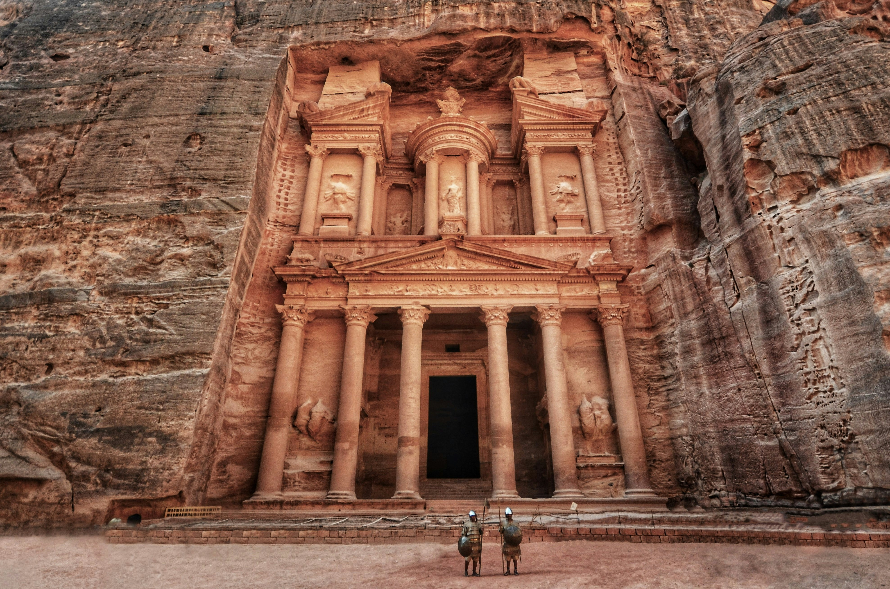
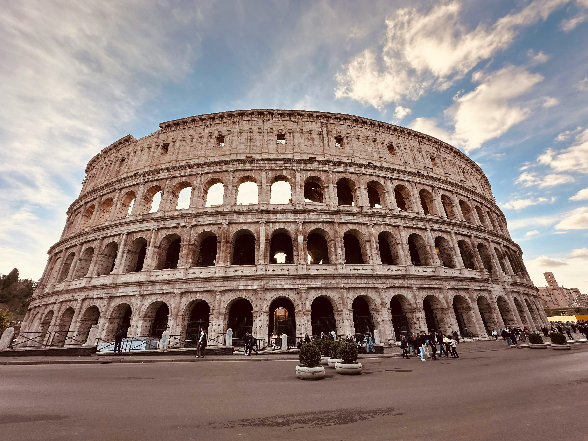
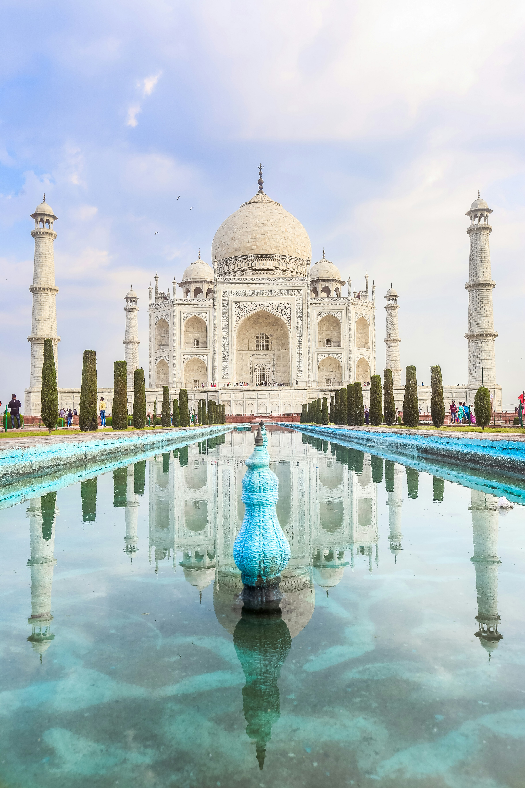

GlobeX
GlobeX is a simple yet meanningful part of The Country Book, heighlighting the seven wonders of the world and a few remarkable facts about our planet.
While not overloading with data, it offers a clear look at these iconic landmarks and the inspiration behind their global significance.
The idea was born from a passion to share wonders that define human achievement and natural beauty - all in one place.
World Wonder Showcase
Chichen Itza — Mexico

An ancient Mayan city with a pyramid called El Castillo, rich in astronomical and cultural significance.
Christ the Redeemer — Brazil
The iconic Art Deco statue of Jesus Christ overlooking Rio de Janeiro.
Machu Picchu — Peru
A breathtaking Incan citadel nestled high in the Andes Mountains.
The Great Wall — China
A massive structure stretching over 13,000 miles, built to protect ancient Chinese states.
Petra — Jordan
A stunning rock-cut city carved into rose-colored sandstone cliffs.
The Colosseum — Italy
The grand Roman amphitheatre in Rome where gladiators once fought.
The Taj Mahal — India
A white marble mausoleum built by Emperor Shah Jahan in memory of his wife Mumtaz Mahal — a symbol of eternal love.
Did you know?
- Honey never spoils — archaeologists found pots of it in ancient Egyptian tombs still perfectly edible.
- Bananas are berries, but strawberries aren't.
- The Eiffel Tower can grow over 6 inches taller in summer due to heat expansion.
- Octopuses have three hearts, and their blood is blue.
- Mount Everest grows about 4mm every year due to tectonic movement.
- Finland has more saunas than cars.
- The coldest temperature ever recorded on Earth was -128.6°F (-89.2°C) in Antarctica.
- Rain has a smell — it’s caused by a bacteria-released compound called geosmin.
- In Japan, there's a festival where people throw beans to scare away evil spirits.
- Your stomach gets a new lining every 3-4 days to prevent it from digesting itself.
- The world's largest snow maze was built in Canada and covers over 2,789 square meters.
- Holi, the Indian festival of colors, is a celebration of love, forgiveness, and spring.
- Watermelon is both a fruit and a vegetable.
- The Great Wall of China isn’t a single wall, but a collection of walls built over centuries.
- Bamboo can grow up to 35 inches in a single day.
- Iceland has no mosquitoes.
- The Amazon Rainforest produces 20% of the world's oxygen.
- The Taj Mahal changes color depending on the time of day and moonlight.
- Norway has a town where the sun doesn't set for 76 days in summer.
- Australian people celebrate Christmas in summer.
- In Japan, there's a festival where people fly giant fish-shaped kites called Koinobori.
- Antarctica is technically a desert — it receives less rainfall than the Sahara!
- Iceland has 13 “Yule Lads” — mischievous Christmas creatures who visit children instead of Santa.
- Italy has a cheese that’s illegal in many countries — Casu Marzu, which contains live maggots!
- Finland hosts wife-carrying races — men run an obstacle course carrying their wives.
- In Cherrapunji, India, people build living bridges from tree roots to cross rivers.
- Mexico’s Day of the Dead (Día de los Muertos) celebrates ancestors with joy.
- Hanami in Japan is also a time for picnic parties under the cherry blossoms.
- Hawaiian pizza with pineapple was actually invented in Canada.
- In Yoro, Honduras, a rare weather even called"Lluvia de Paces" happens almost every year -fish fall from the sky after heavy rain.